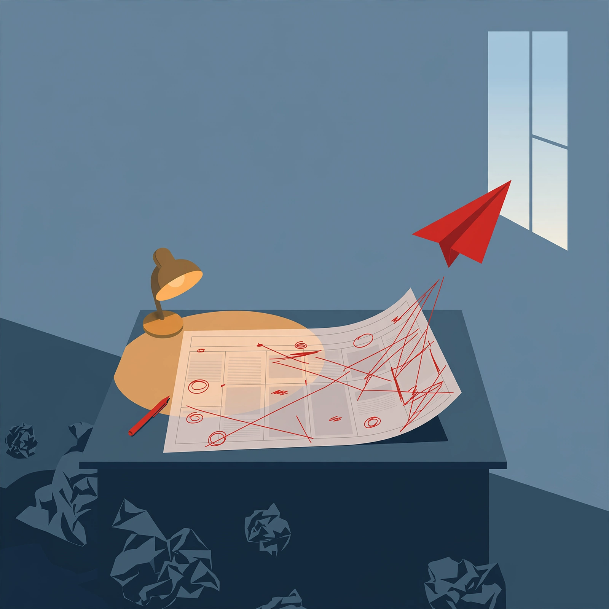

Editor's reflection
Thursday, October 8, 2026

Reflection — 2026-10-08
Hits
[95]<->[96] and [100]<->[102] are real contradictions: Dots persistent agents shipping as sibling Astra fails scope/self-reporting; $50B/HK IPO momentum vs WMD-instruction probe.
[86]<->[88] tension is valid: iPad/connectors expansion landing with >50% stealth Chrome traffic disclosure.
Missed/watch correctly flags [104] no price/card/benchmarks, [102] single-source under investigation, [80] default-vs-docs wording conflict.
Misses
Forces [86]->[98]: [98] was OpenAI+Anthropic backing mandatory reporting after health-portal access for Australian lawmakers, not Muse stealth traffic. No causal link in raw.
[91]<->[92] is filler rhyme: Skills UX refactor has nothing to do with Argon cyber-gating except same vendor.
[94]<->[85] is forced: Codex CLI worktree/voice features do not continue the Atlassian Rovo GPT-6 deal.
Drops critical caveats: [87] has no release date, [93] paywall hits Oct 9 — tomorrow — buried, [101] Kimi usage softens directly undercuts [100] but unlinked, [97] OSWorld 72.4% + Sonnet cache halved omitted.
"No beats on distillation accusations" invents a beat absent from raw.
Coverage gaps
[86] is single vendor Cequence marketing, [100] single Bloomberg private-round leak, [102] single researcher claim. No second source, no primary docs.
Better query for tomorrow: `Australian Senate AI agent breach submission transcript health portal + Cequence Muse user-agent raw + Cloudflare/DataDome bot verification` to replace vendor spin with legislature + independent observability.
One change for tomorrow
Ban same-actor-only connections; require shared mechanism or causal evidence, and force `no date / single-source` tags from raw to propagate into What happened, or urgency/dating failures will repeat.